Thank you for downloading GeniXCMS - Simple and Light Content Management System. If you have any questions that are beyond the scope of this help file, please feel free to email via my user page contact form here.
Before we can run your website, we have to install it first. Below are the step to install it.
Before we started, we have to prepare the MySQL Database. Every each Hosting provider had their own settings for adding the MySQL database.
For Cpanel User. Below are how to create database. Creating a MySQL database with cPanel, which is included in all of SiteGround's hosting plans, can be easily accomplished. In order to create a MySQL database on your hosting account, you need to log in cPanel. This can be done by either using the Go to cPanel button in the Customer Area ->My Accounts section or by entering one of the following URLs in your web browser:
http://yourdomainname.com/cpanel
Login with Your CPanel username and password provided by your hosting provider.
Go to this section :
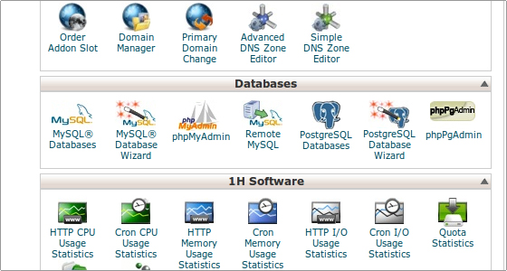
In order to create a new database you need to enter the desired name for the database in the New Database field and click on the Create Database button as shown below:
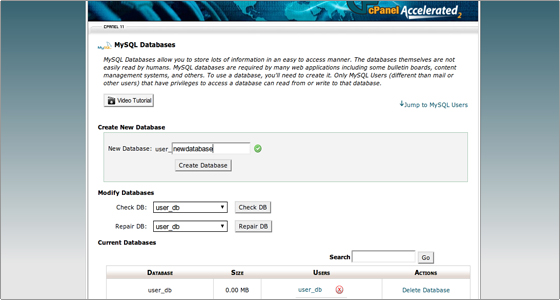
A confirmation screen will be displayed, informing that the database has been successfully created:
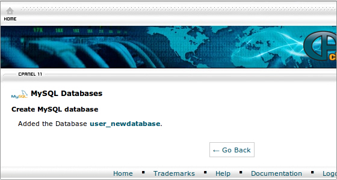
You can click on the Go Back button to return to the database management screen.
After that, create your database username.
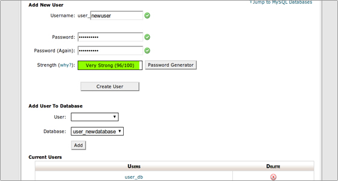
Click Submit to save your MySQL username.
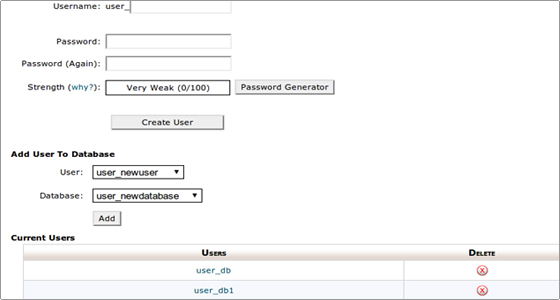
You will be redirected to a screen where you will be prompted to choose the desired privileges. It is advisable to select All Privileges and click on the Make Changes button:
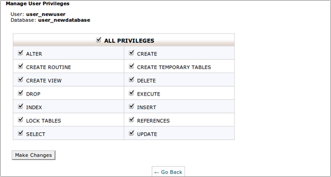
And now you have Database Username and Password ready.
After the database was created and the user was assigned to the database, now continue with importing the SQL.
Go to the PHPMyAdmin, Click it on the panel with this icon.
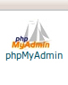
After the PHPMyAdmin window is opened, browse to your database. After that click import menu.
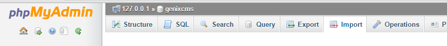
Browse the SQL File.
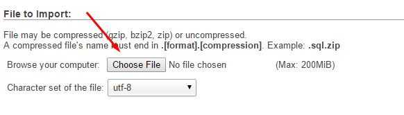
Pick the file
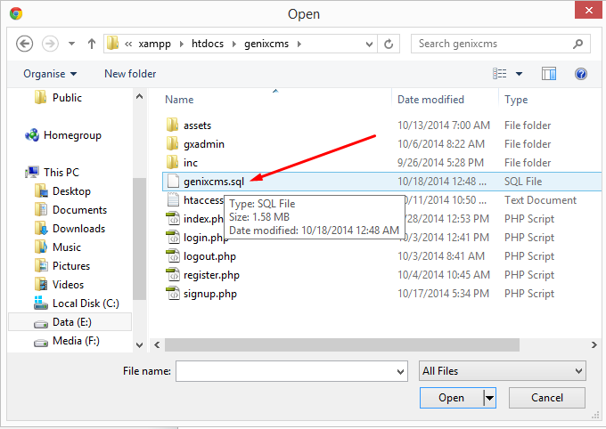
And after that clock GO button on the bottom of the page.
After preparing the database is ready, it's now continue with settings up the script. First we take a look at the config.php file.
Go to this directory : genixcms -> inc -> config
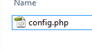
Open config.php with text editor you have, eg: notepad, notepad++, sublime, bluefish, etc.
<?php
define('GX_URL' , 'http://localhost/genixcms'); // replace this with your own domain, this is must. Currently this variable is still used as
main variable. Will be removed on the next update.
// DB CONFIG
define('DB_HOST', 'localhost'); // set your database hostname, default is localhost
define('DB_NAME', 'user_newdatabase'); // set your databasename
define('DB_PASS', ''); // set your database password
define('DB_USER', 'user_newuser'); // set your database username
define('DB_DRIVER', 'mysql'); // leave it as mysql, no more dbdriver tested yet.
define('THEME', 'default'); // you can replace it with your themes.
define('GX_LANG', 'english'); // currently we are still managing the language.
define('SMART_URL', false); //set 'true' if you want use SMART URL (SEO Friendly URL)
define('GX_URL_PREFIX', '.html'); // if you set this, you must replace the .htaccess file.
define('SECURITY', '9234qrioq@)(1-k23#-01iqjiq012iajdq'); // don't remove, or replace this part. this is for security and password generator.
fill in the necessary value. After the values are set, save it.
After setting up is done, now it's time to upload it to your webhosting. If you don't know your Hosting Login and Password, please ask your hosting provider.
There are so many ways, one easiest is using FTP.
Open FTP program, eg: filezilla, cuteFTP, etc.
Fill in the server host or IP, server username, and password. After all is filled, just connect it.
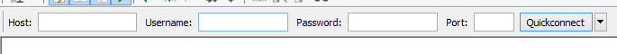
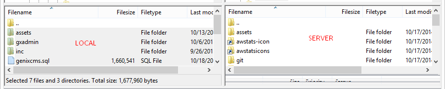
On the server directory (RIGHT SIDE), go to your web folder. It's usually inside the public_html or www directory.
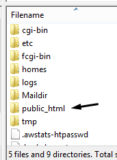
On the local directory (LEFT SIDE), select all files. Right Click and Upload it.
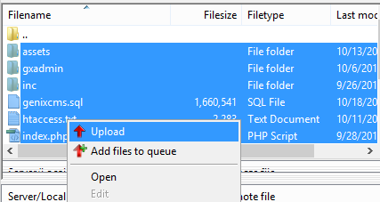
If you are using friendly URL, as you setting at the config.php file. Next step is activating the .htaccess files. On your ftp, right click htaccess.txt and rename it to .htaccess
After finish, go to http://yourdomain.com/gxadmin/
Insert
username : admin
password : admin
You can change the password later.
After logging in, go to the Backend Dashboard. at http://yourdomain.com/gxadmin
This page will shows up.
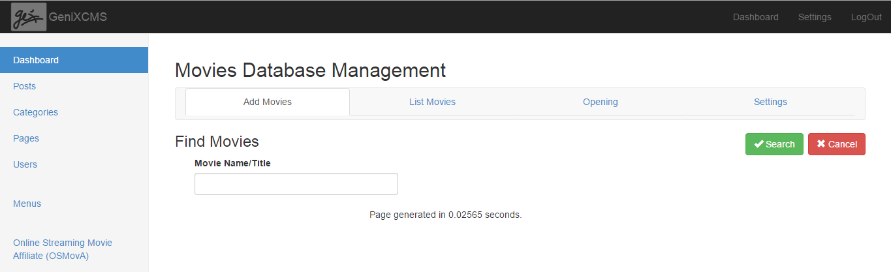
Before You started you had to setting it first. Below are step by step to settings it.
Click the Settings menu at the top right.
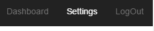
On the General Settings Tab, fill all necessary field.
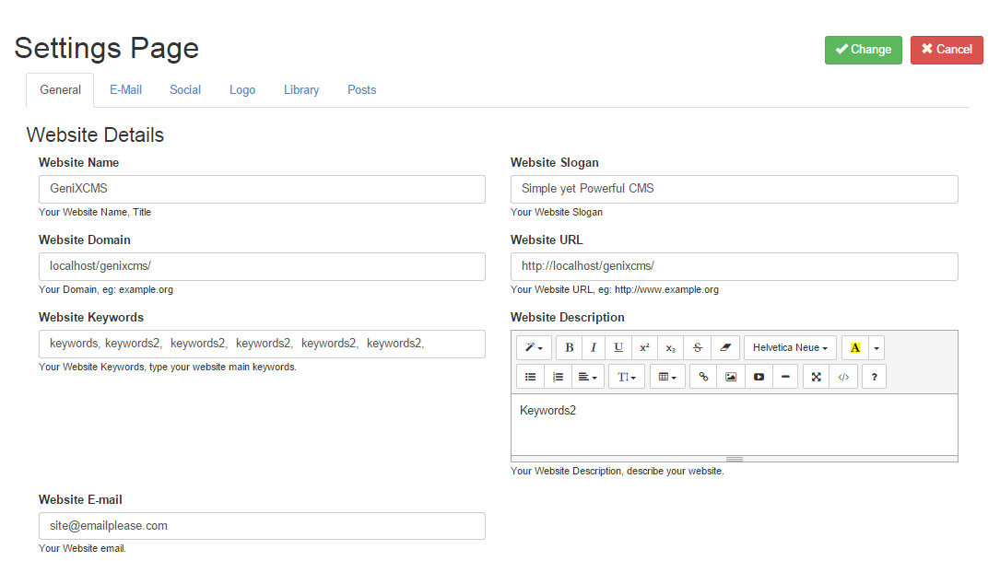
Change the Website Name, Slogan, Domain, URL, Keywords, Descriptions and email.
After general settings is set, click the Logo tab,
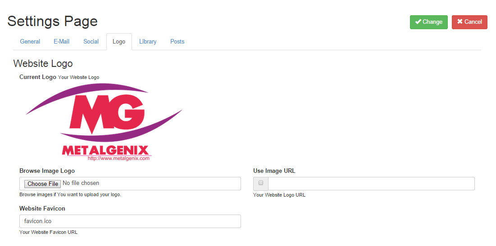
In here, you can change your logo. Click the Browse file for upload your own logo.
To use available logo online, just fill the Use Image URL with the full url of the logo image. And don't forget to check the checkbox.
Fill the Favicon input if you want to use favicon. Don't forget to upload it first under your www or public_html directory.
After that, click the Posts tab.
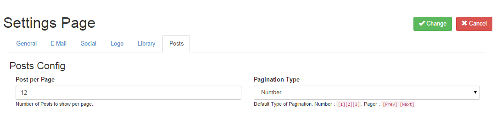
In here, you can set how many post shows on the frontpage. Set the value as you want.
There are two pagination type availbale, Number and Pager.
Number :
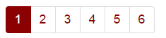
Pager :
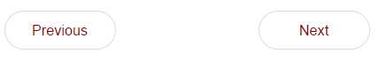
After that click the Change Button.
Before you begin to grab Movies, Please make sure you had create the category. Open the Categories page.
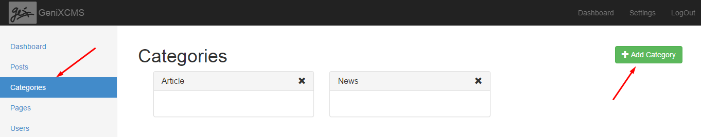
After that click the Add Category button on the top right.
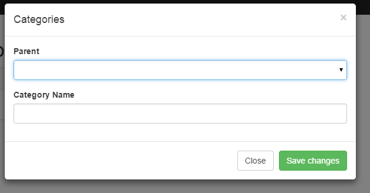
Pick Parent category you want. And fill in the Category Name. eg: Movies
And than click the Save Changes button.
This will appear on the page.
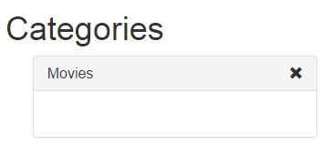
After that go to the Movie Grabber Page.
To create pages, just click the Page Menus on the left.
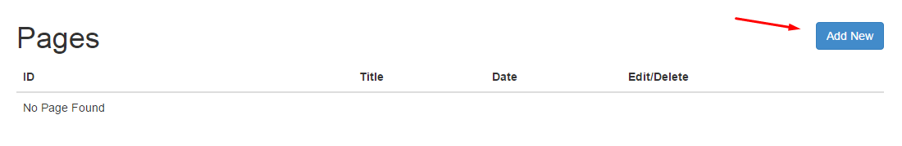
After the page is opened, click the Add New button.
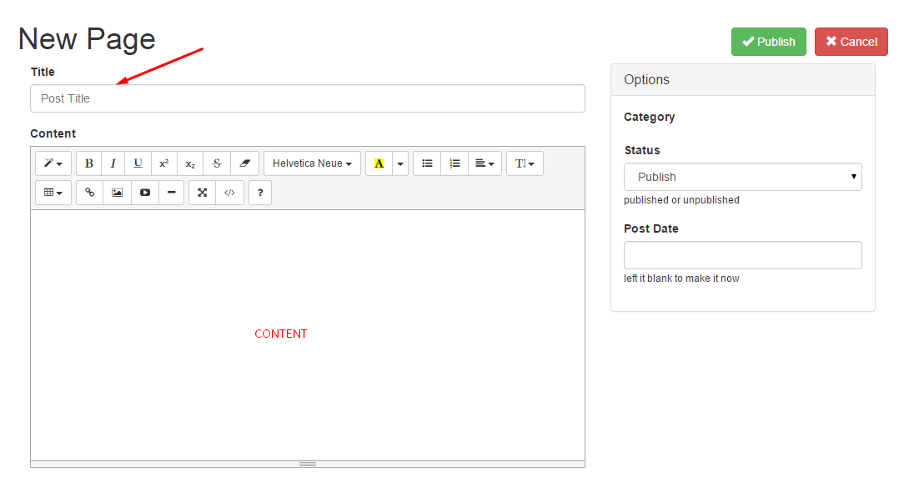
After the Form Page with editor is shows up. Fill in the title of the Page. eg: Disclaimer, Privacy Policy, etc.
And then, fill in the content. After that click the green Publish button.
After alls are set, it's time to create your post. To add post, click on the Post menu at the left sidebar.
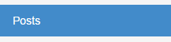
after you click the posts menu, this page will appear. To creae a new post, just click the Add New button like the images below.
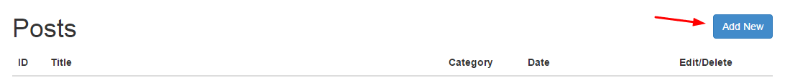
New page with form input of post will appear. See image below.
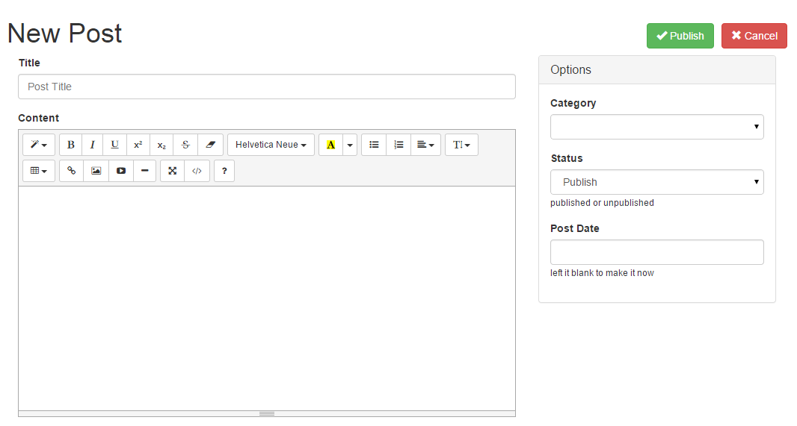
There are some form input, Title, Content, Category, Status, and Post Date.
Input it with your desired content. After all are set. Press the Publish button on the top right.